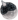
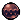

Silksong Checklist
0% done
Uncheck All
Red Tools
Straight Pin
Threefold Pin
Sting Shard
Tacks
Longpin
Curveclaw
/
Curvesickle
Throwing Ring
Pimpillo
Conchcutter
Silkshot (Any variation)
Delver's Drill
Cogwork Wheel
Cogfly
Rosary Cannon
Voltvessels
Flintslate
Flea Brew
Plasmium Phial
Blue Tools
Druid's Eye
/
Druid's Eyes
Magma Bell
Warding Bell
Pollip Pouch
Fractured Mask
Multibinder
Weavelight
Sawtooth Circlet
Injector Band
Spool Extender
Reserve Bind
Claw Mirror
/
Claw Mirrors
Memory Crystal
Snitch Pick
Volt Filament
Quick Sling
Wreath of Purity
Longclaw
Wispfire Lantern
Egg of Flealia
Pin Badge
Yellow Tools
Compass
Shard Pendant
Magnetite Brooch
Weighted Belt
Barbed Bracelet
Dead Bug's Purse
/
Shell Satchel
Magnetite Dice
Scuttlebrace
Ascendant's Grip
Spider Strings
Silkspeed Anklets
Thief's Mark
Silk Skills
Silkspear
Thread Storm
Cross Stitch
Sharpdart
Rune Rage
Pale Nails
Needle
Sharpened Needle (For free after completing 'The Threadspun Town')
Shining Needle (

1)
Hivesteel Needle (1 and

400)
Pale Steel Needle (1 and 680)
Ancient Masks
Bought from
Pebb
in Bone Bottom for 300 / In Act 3, Bought from
Grindle
in Blasted Steps for 320
Lower Wormways behind a breakable wall
Passageway between The Marrow and Deep Docks
Area above Seamstress's home in Far Fields
Centre of Shellwood at the end of a platforming challenge
East Weavenest Atla behind a breakable wall
Sold by
Jubilana
in Songclave for 750
West Cogwork Core past enemy gauntlet
Behind moving box puzzle in central Whispering Vaults
Reward for completing the
'Savage Beastfly'
Wish.
Inside bone building in east Far Fields
Southwest Mount Fay, west of the bench
Northeast part of the Slab
At the end of a hallway in East Bilewater filled with Slubberlugs
East Wisp Thicket
West Blasted Steps
Brightvein (acessible by using Silk Soar in a rock floating in the ice water in Mount Fay)
Reward for completing
'Fastest in Pharloom'
wish in east Far Fields
Reward for completing the
'Dark Hearts'
wish
Reward for completing the
'The Hidden Hunter'
wish
Silk Spools
Behind a breakable wall in a mossy area above Bone Bottom
Central section of Deep Docks
In Greymoor, above Shakra's bench
Sold by
Frey
in Bellhart for 270
In a passage in Weavenest Atla
In a vertical room in the west section of The Slab
At the top of the Grand Gate
Central section of the Underworks
Given by the Flea Caravan upon their ascent to the Grand Gate
In Whiteward, under the lift
Southeast section of the lower Cogwork Core
Lower right section of the Underworks
Given by Sherma after completing the
'Balm for the Wounded'
wish
Sold by
Jubilana
for 500
Southeast section of Deep Docks
In High Halls at the highest point in the left vertical room
In the western section of the Memorium
Sold by
Grindle
for 680
Silk Hearts
Reward for defeating
Bell Beast
Reward for defeating
The Unravelled
Reward for defeating
Lace (2nd Fight)
Crests
Reaper
Wanderer
Beast
Witch
Architect
Shaman
Crafting Kit Upgrades
Purchased from
Forge Daughter
in Deep Docks for 180
Reward from
Creige
in Halfway Home for completing the
'Crawbug Clearing'
wish
Purchased from
Twelfth Architect
in Underworks for 450
Purchased from
Grindle
in Blasted Steps for 700
Tool Pouch Upgrades
Purchased from
Mort
in Pilgrim's Rest for 220 / In Act 3, purchased from
Grindle
in Blasted Steps for 220
Reward from
Loddie
in The Marrow after beating his first challenge / In Act 3, found in
Loddie's
former location, on a table
Reward from
Nuu
in Halfway Home for completing the
'Bugs of Pharloom'
wish
Reward from
Fleamaster Mooshka
in Fleatopia
Abilities
Swift Step
Cling Grip
Needolin
Needle Strike
Clawline
Silk Soar
Sylphsong
Everbloom